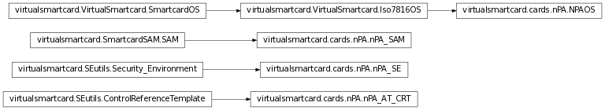

Bases: virtualsmartcard.VirtualSmartcard.Iso7816OS
secure access module
Calculate Answer to Reset (ATR) and returns the bitstring.
- directConvention (bool): Whether to use direct convention or
inverse convention.
- TAi, TBi, TCi (optional): Value between 0 and 0xff. Interface
Characters (for meaning see ISO 7816-3). Note that if no transmission protocol is given, it is automatically selected with T=max{j-1|TAj in args OR TBj in args OR TCj in args}.
- T (optional): Value between 0 and 15. Transmission Protocol.
Note that if T is set, TAi/TBi/TCi for i>T are omitted.
- histChars (optional): Bitstring with 0 <= len(histChars) <= 15.
Historical Characters T1 to T15 (for meaning see ISO 7816-4).
T0, TDi and TCK are automatically calculated.
Returns a byte according to the third software function table from the historical bytes of the card capabilities.
master file
Powers down the card
Bases: virtualsmartcard.SEutils.ControlReferenceTemplate
Adjust the config string using a given tag, value combination. If the config string already contains a tag, value pair for the given tag, replace it. Otherwise append tag, length and value to the config string.
Set the algorithm to be used by this CRT. The algorithms are specified in a global dictionary. New cards may add or modify this table in order to support new or different algorithms.
| Parameters: | data – reference to an algorithm |
|---|
Return the content of the CRT, encoded as TLV data in a string
Bases: virtualsmartcard.SmartcardSAM.SAM
Decrypt the given data, using the parameters stored in the SAM. Right now we do not encrypt the data. In memory encryption might or might not be added in a future version.
Encrypt the given data, using the parameters stored in the SAM. Right now we do not encrypt the data. In memory encryption might or might not be added in a future version.
This method returns the key specified by the p2 parameter. The key may be stored on the cards filesystem.
| Parameters: |
|
|---|
Change the specified referenced data (e.g. CHV) of the card
Erases a Security Environment stored under SEID from the SAM
Authenticate card to terminal. Encrypt the challenge of the terminal to prove key posession
Takes an encrypted challenge in the form ‘Terminal Challenge | Card Challenge | Card number’ and checks it for validity. If the challenge is successful the card encrypts ‘Card Challenge | Terminal challenge’ and returns this value
Restores a Security Environment from the SAM and replaces the current SE with it.
Setter function for the internal reference to the Filesystem. The SAM needs a reference to the filesystem in order to store/retrieve keys.
| Parameters: |
|
|---|
Stores the current Security environment in the secure access module. The SEID is used as a reference to identify the SE.
Bases: virtualsmartcard.SEutils.Security_Environment
next step to performed for EAC
Authenticate the terminal to the card. Check whether Terminal correctly encrypted the given challenge or not
The GENERATE PUBLIC-KEY PAIR command either initiates the generation and storing of a key pair, i.e., a public key and a private key, in the card, or accesses a key pair previously generated in the card.
| Parameters: |
|
|---|
Hash the given data using the algorithm specified by the current Security environment.
| Returns: | raw data (no TLV coding). |
|---|
This method is used to store, restore or erase Security Environments or to manipulate the various parameters of the current SE. P1 specifies the operation to perform, p2 is either the SEID for the referred SE or the tag of a control reference template
| Parameters: | p1 – Bitmask according to this table
|
|---|
This methods parses a data field including Secure Messaging objects. SM_header indicates whether or not the header of the message shall be authenticated. It returns an unprotected command APDU
| Parameters: |
|
|---|---|
| Returns: | Unprotected command APDU |
In the end this command is nothing but a big switch for all the other commands in ISO 7816-8. It will invoke the appropriate command and return its result
This method protects a response APDU using secure messaging mechanisms
| Returns: | the protected data and the SW bytes |
|---|
Verify the cryptographic checksum contained in the data field. Data field must contain a cryptographic checksum (tag 0x8E) and a plain value (tag 0x80)
Verify the digital signature contained in the data field. Data must contain a data to sign (tag 0x9A, 0xAC or 0xBC) and a digital signature (0x9E)